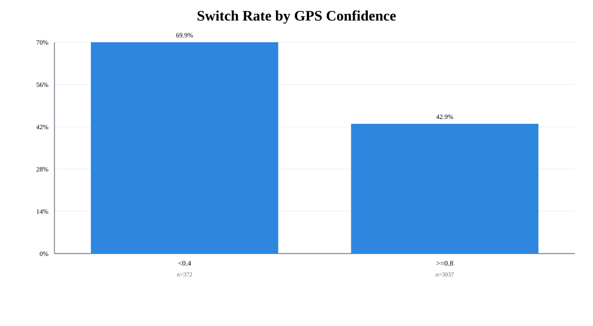
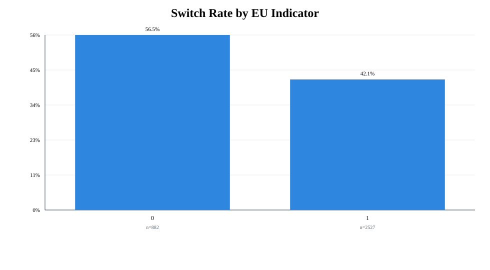
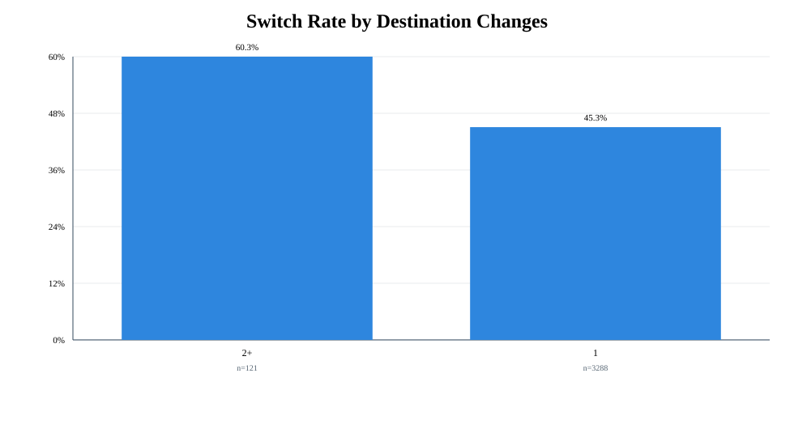
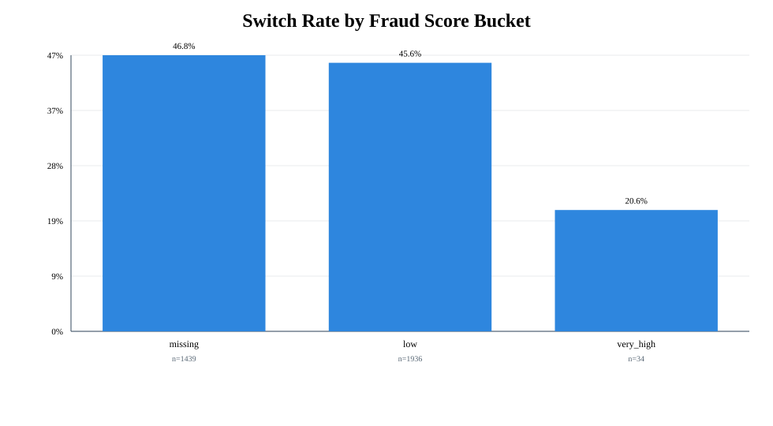

Executive-ready summary and recommendations.
relative_error = |metered - upfront| / upfront, switched when > 20%.
relative_error = |metered - upfront| / upfront




A/B/n pilot with guardrails, phased rollout, and recalibration governance.